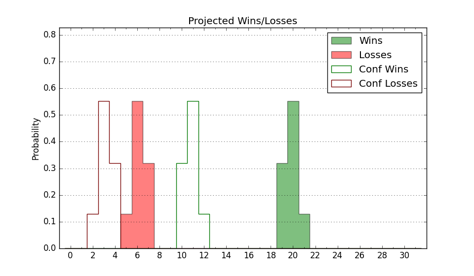

| Home | Game Probabilities | Conferences | Preseason Predictions | Odds Charts | NCAA Tournament |
| City: | Ithaca, New York | |
| Conference: | Ivy League (1st)
| |
| Record: | 10-2 (Conf) 19-5 (Overall) | |
| Ratings: | Comp.: 6.9 (108th) Net: 6.9 (108th) Off: 113.0 (65th) Def: 106.1 (186th) SoR: 44.8 (60th) |
| Remaining | ||||||
|---|---|---|---|---|---|---|
| Date | Opponent | Win Prob | Pred. | |||
| 3/2 | @ Princeton (63) | 21.0% | L 74-83 | |||
| 3/9 | @ Columbia (201) | 60.6% | W 84-81 | |||
| Previous | Game Score | |||||
| Date | Opponent | Win Prob | Result | Off | Def | Net |
| 11/6 | @Lehigh (269) | 70.7% | W 84-78 | -5.0 | 5.4 | 0.5 |
| 11/11 | @Fordham (170) | 53.2% | W 78-73 | -1.7 | 3.1 | 1.5 |
| 11/15 | @George Mason (93) | 29.9% | L 83-90 | 11.1 | -11.4 | -0.4 |
| 11/19 | (N) Cal St. Fullerton (239) | 78.4% | W 88-70 | -1.0 | 8.4 | 7.5 |
| 11/20 | (N) Utah Valley (158) | 64.5% | W 74-61 | -2.8 | 12.8 | 10.0 |
| 11/29 | Monmouth (193) | 83.1% | W 91-87 | 2.9 | -18.8 | -15.8 |
| 12/2 | @Lafayette (310) | 80.3% | W 79-71 | -6.4 | 0.6 | -5.8 |
| 12/5 | @Syracuse (87) | 27.9% | L 70-81 | -14.6 | 2.7 | -11.9 |
| 12/19 | @Siena (357) | 93.0% | W 95-74 | -2.0 | -2.7 | -4.7 |
| 12/22 | @Robert Morris (298) | 77.6% | W 90-85 | -0.2 | -5.2 | -5.4 |
| 12/30 | Colgate (135) | 72.0% | W 77-64 | 1.5 | 9.4 | 10.9 |
| 1/2 | @Baylor (11) | 7.2% | L 79-98 | 8.8 | -7.1 | 1.7 |
| 1/9 | Columbia (201) | 84.0% | W 91-79 | 15.2 | -9.7 | 5.4 |
| 1/15 | Penn (190) | 82.7% | W 77-60 | -9.6 | 14.6 | 5.0 |
| 1/20 | @Brown (213) | 61.9% | W 84-83 | 6.8 | -10.3 | -3.5 |
| 1/27 | Princeton (63) | 47.6% | W 83-68 | 9.0 | 16.3 | 25.3 |
| 2/2 | @Dartmouth (331) | 85.9% | W 56-53 | -21.2 | 9.8 | -11.4 |
| 2/3 | @Harvard (191) | 58.5% | W 89-76 | 16.3 | -0.2 | 16.2 |
| 2/10 | @Yale (89) | 28.1% | L 78-80 | 8.5 | -6.2 | 2.4 |
| 2/16 | Harvard (191) | 82.7% | W 75-62 | -11.7 | 13.7 | 2.0 |
| 2/17 | Dartmouth (331) | 95.4% | W 89-80 | 9.9 | -22.4 | -12.5 |
| 2/23 | Yale (89) | 57.1% | W 65-62 | -13.8 | 16.1 | 2.3 |
| 2/24 | Brown (213) | 84.7% | L 74-78 | -6.6 | -15.1 | -21.7 |
| 3/1 | @Penn (190) | 58.4% | W 87-81 | 7.4 | -2.8 | 4.6 |
| Stats & Trends | |||||
|---|---|---|---|---|---|
| Current | Day | Week | Month | Season | |
| Composite | 6.9 | +0.2 | -0.8 | -0.9 | +2.0 |
| Comp Rank | 108 | +1 | -6 | -7 | -9 |
| Net Efficiency | 6.9 | +0.2 | -0.8 | -1.3 | -- |
| Net Rank | 108 | +1 | -6 | -9 | -- |
| Off Efficiency | 113.0 | +0.2 | -0.1 | -1.2 | -- |
| Off Rank | 65 | +2 | -- | -20 | -- |
| Def Efficiency | 106.1 | -0.0 | -0.7 | -0.0 | -- |
| Def Rank | 186 | +1 | -7 | +17 | -- |
| SoS Rank | 177 | +8 | -5 | -8 | -- |
| Exp. Wins | 19.8 | +0.4 | -0.5 | +0.3 | +4.5 |
| Exp. Conf Wins | 10.8 | +0.4 | -0.5 | +0.3 | +2.3 |
| Conf Champ Prob | 17.3 | +5.4 | -35.4 | -18.0 | -5.8 |

| Advanced Stats | ||
|---|---|---|
| Stat | Value | Rank |
| Off Eff FG % | 0.568 | 22 |
| Off Ast Ratio | 0.171 | 47 |
| Off ORB% | 0.261 | 238 |
| Off TO Rate | 0.163 | 287 |
| Off FT Ratio | 0.324 | 196 |
| Def Eff FG % | 0.519 | 226 |
| Def Ast Ratio | 0.141 | 165 |
| Def ORB% | 0.319 | 317 |
| Def TO Rate | 0.152 | 137 |
| Def FT Ratio | 0.326 | 182 |